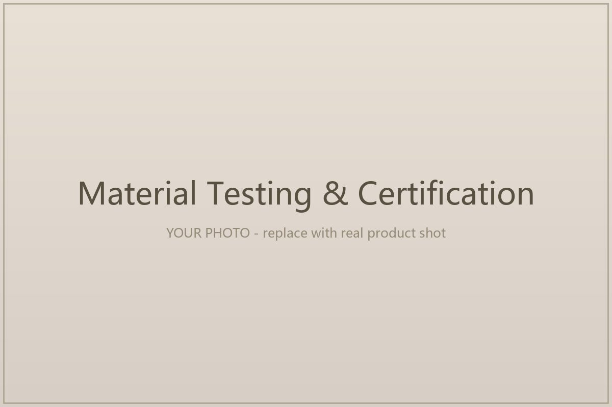

Home / Certifications
Compliance
Selling soft furnishings into the EU and US means proving materials are safe. We test and document every batch so your customs entry and retailers stay clean.

Importer FAQ
Yes. Our fabrics are tested to OEKO-TEX® Standard 100 and comply with EU REACH SVHC limits. Test reports are issued per batch and can be shared with your EU customers or notified body.
For products that may be used by children (e.g. certain blankets), we supply CPSIA-compliant materials and a Prop 65 statement where applicable. Tell us your sales channel and we match the standard.
Yes — fibre-content labels, lab reports, commercial invoices and packing lists are prepared for both EU and US entry. We can align labelling with your brand and destination rules.
Absolutely. We produce white-label and private-label goods and apply your care labels, swing tags and compliance marks, keeping specs archived for fast reorders.
Tell us your destination and product, and we'll confirm the exact documentation required.
Ask our team